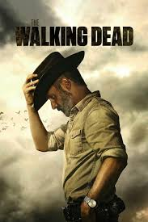

Name:- Game of thrones
Ratting:- ★★★★★
Set on the continents of Westeros and Essos, Game of Thrones follows the violent dynastic struggles among noble families for control of the Iron Throne.
The story begins as King Robert Baratheon asks his longtime friend Eddard "Ned" Stark to serve as his chief advisor, pulling the honorable Stark family into a web of political intrigue and betrayal.
While the Great Houses play their "game" for power, an ancient and forgotten threat—the White Walkers—gathers in the far North, threatening to destroy all of humanity.
In the East, Daenerys Targaryen, the exiled daughter of the former king, builds an army and hatches three dragons to reclaim her birthright.
As winter approaches, the series explores themes of power, justice, and survival, leading to an epic conclusion where the living must unite against the dead before deciding who will ultimately rule.

Name:- The walking dead
Ratting:- ★★★★★
The Walking Dead follows Sheriff Deputy Rick Grimes, who wakes up from a coma to find the world devastated by a zombie apocalypse.
As he searches for his family, Rick becomes the leader of a group of survivors, navigating a dangerous landscape filled with "walkers" and decaying civilization.
The story shifts from the immediate threat of the undead to the more complex danger of living humans, who often become more ruthless than the monsters.
Across various locations like a farm, a prison, and the community of Alexandria, the survivors must decide what they are willing to do to stay alive.
Ultimately, the series is a gritty exploration of morality and the endurance of the human spirit in a world where the dead have risen and the rules of society have vanished.
Name:- Money heist
Ratting:- ★★★★★
Money Heist follows a mysterious man known as "The Professor" who recruits a group of eight specialists to carry out the biggest robbery in history.
The first heist targets the Royal Mint of Spain, where the team wears iconic red jumpsuits and Salvador Dalí masks while taking 67 hostages.
Rather than simply stealing existing money, the plan involves staying inside for days to print 2.4 billion euros while manipulating the police from the outside.
The story is narrated by Tokyo and focuses on the intense psychological battle between the Professor and the lead police negotiator, Raquel Murillo.
As the series progresses, the stakes rise with a second daring heist on the Bank of Spain, turning the criminals into symbols of "the resistance" against the system.